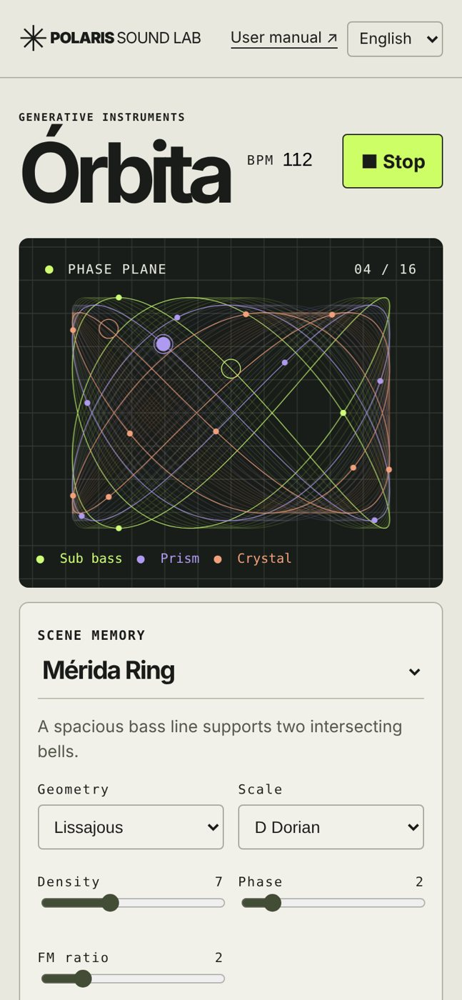
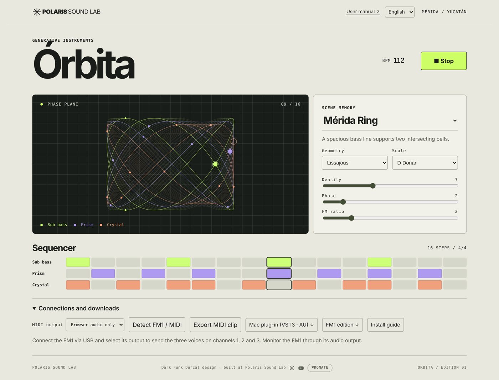

GENERATIVE INSTRUMENTS · INSTALL AND QUICK GUIDEINSTALACIÓN Y GUÍA RÁPIDA
Órbita
A generative instrument: FM synthesis, euclidean rhythms and phase plots. Play it in your browser, in Ableton Live as a plug-in, or on your M-VAVE FM-1. Free and open source.
Un instrumento generativo: síntesis FM, ritmos euclidianos y gráficos de fase. Tócalo en el navegador, en Ableton Live como plug-in o en tu M-VAVE FM-1. Gratis y de código abierto.
WEB
Play now
Tocar ya
Nothing to install. Chrome, Edge, Safari or Firefox, on a computer or a phone.
Nada que instalar. Chrome, Edge, Safari o Firefox, en computadora o teléfono.
Change the scene (Mérida Ring, Skewed Crystal, Lunar Drift, Discrete Acid): each one sets the tempo, the shape and the scale.
Move Density (how many hits in the 16 steps), Phase (where they fall) and FM ratio (from warm to metallic). The orbits on the screen follow the sound.
Tap a voice's name in the sequencer to mute it. Geometry and Scale change the melody.
Connections and downloads → Export MIDI clip gives you the pattern for any DAW. With an FM-1 on USB, Detect FM1 / MIDI plays the three voices on channels 1, 2 and 3.
Cambia la escena (Anillo de Mérida, Cristal sesgado, Deriva lunar, Ácido discreto): cada una fija tempo, figura y escala.
Mueve Densidad (cuántos golpes en los 16 pasos), Fase (dónde caen) y Relación FM (de cálido a metálico). Las órbitas en pantalla siguen al sonido.
Toca el nombre de una voz en el secuenciador para silenciarla. Geometría y Escala cambian la melodía.
Conexiones y descargas → Exportar clip MIDI te da el patrón para cualquier DAW. Con un FM-1 por USB, Detectar FM1 / MIDI toca las tres voces por los canales 1, 2 y 3.
The language switch is in the top bar (English / Español); it is remembered.
El cambio de idioma está en la barra superior (English / Español) y se recuerda.

02 · MAC · ABLETON LIVE
Install the plug-in (VST3 · AU)
Instala el plug-in (VST3 · AU)
Easiest: open Terminal (⌘ + Space, type “Terminal”), paste this line and press Return:
Lo más fácil: abre Terminal (⌘ + Espacio, escribe “Terminal”), pega esta línea y pulsa Retorno:
It downloads the latest release and puts Polaris Orbita in your VST3 and Audio Units folders, and the app in ~/Applications.
In Ableton Live: Settings → Plug-ins, turn on Use VST3 Plug-in System Folders (or Audio Units) and press Rescan.
In the browser: Plug-ins → Polaris Sound Lab → Polaris Orbita. Drag it onto a MIDI track and play a minor chord.
Turn on Sequence with Live and press play in Live: Pulses / 16 spreads the hits over sixteen steps, following Live's tempo and bar. Every control can be automated and is saved with the set.
To update, run the same line again.
Descarga la versión más reciente y pone Polaris Orbita en tus carpetas VST3 y Audio Units, y la app en ~/Applications.
En Ableton Live: Ajustes → Plug-ins, activa Usar carpetas de sistema VST3 (o Audio Units) y pulsa Volver a escanear.
En el navegador: Plug-ins → Polaris Sound Lab → Polaris Orbita. Arrástralo a una pista MIDI y toca un acorde menor.
Activa Secuencia con Live y dale play en Live: Pulsos / 16 reparte los golpes en dieciséis pasos, siguiendo el tempo y el compás de Live. Todos los controles se pueden automatizar y se guardan con el set.
Para actualizar, vuelve a ejecutar la misma línea.
Prefer the download? Unzip ORBITA-mac.zip, right-click Install-ORBITA.command → Open → Open. If macOS refuses it: System Settings → Privacy & Security → Open Anyway. The language of the plug-in's panel (English / Español) is saved with each instance.
¿Prefieres la descarga? Descomprime ORBITA-mac.zip, clic derecho en Install-ORBITA.command → Abrir → Abrir. Si macOS lo rechaza: Ajustes del Sistema → Privacidad y seguridad → Abrir igualmente. El idioma del panel del plug-in (English / Español) se guarda con cada instancia.
Unzip ORBITA-FM1.zip. Inside: voces (32 single voices), Orbita-32.syx (the whole bank), escenas (four MIDI clips) and the manuals.
With the official M-VAVE FM1 Open firmware: open the M-VAVE Workbench in Chrome, connect the FM-1 by USB and open its DX7 library.
First export the group you will write to, so your own sounds are kept.
Import one voice from voces to start (or Orbita-32.syx for all 32), check the destination in the editor and save it to the FM-1.
Pick the voice on a track. Try ORSUB1 with Perigeo, ORKEY2 with Isoclina, ORHALO3 with Lagrange and ORDUST4 with Sideral.
In Ableton, enable the FM-1 as a MIDI output, drag a clip from escenas onto a MIDI track and send it to the FM-1 track's channel (channel 1 for the first track). The clips follow Live's tempo; the names give the suggested BPM.
Descomprime ORBITA-FM1.zip. Dentro: voces (32 voces sueltas), Orbita-32.syx (el banco completo), escenas (cuatro clips MIDI) y los manuales.
Con el firmware oficial M-VAVE FM1 Open: abre el Workbench de M-VAVE en Chrome, conecta el FM-1 por USB y abre su biblioteca DX7.
Primero exporta el grupo donde vas a escribir, para conservar tus propios sonidos.
Importa una voz de voces para empezar (u Orbita-32.syx para las 32), comprueba el destino en el editor y guárdala en el FM-1.
Elige la voz en una pista. Prueba ORSUB1 con Perigeo, ORKEY2 con Isoclina, ORHALO3 con Lagrange y ORDUST4 con Sideral.
En Ableton, habilita el FM-1 como salida MIDI, arrastra un clip de escenas a una pista MIDI y envíalo al canal de la pista del FM-1 (canal 1 para la primera pista). Los clips siguen el tempo de Live; el nombre indica el BPM sugerido.
The edition is voices and MIDI, not a firmware: nothing on the FM-1 is replaced. The voices' format and checksums were verified; they have not yet been auditioned on a physical unit. The modulo folder holds the source of an ÓRBITA instrument for the community firmware fm1-dock (Lissajous figure and euclidean sequencer on the FM-1's screen); it is not compiled for the FM-1 yet.
La edición son voces y MIDI, no un firmware: no se reemplaza nada en el FM-1. Se verificaron el formato y los checksums de las voces; todavía no se han escuchado en una unidad física. La carpeta modulo trae el código de un instrumento ÓRBITA para el firmware comunitario fm1-dock (figura de Lissajous y secuenciador euclidiano en la pantalla del FM-1); aún no está compilado para el FM-1.

04 · MANUAL
User manual
Manual de usuario
17 illustrated pages, from installing to playing: web, Ableton Live and FM-1, recipes and answers.
17 páginas ilustradas, de la instalación a tocar: web, Ableton Live y FM-1, recetas y respuestas.